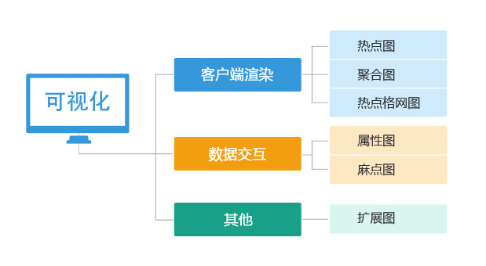
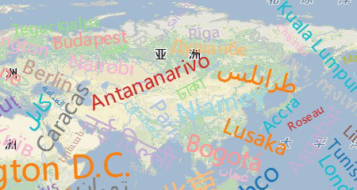

可视化专题
SuperMap iClient for JavaScript 提供了大量可视化效果图，可以满足用户的不同需求，总体可划分为三大类： 客户端渲染、 数据交互、 其他。

一、客户端渲染

总结：
用户在选择点数据的渲染方式时，如果对视觉渐变效果要求比较高可以选择使用热点图，如果只是为了解决大数据量渲染问题可以选择聚合图， 如果想要渐变效果，但是数据量又比较大时可以考虑格网图，具体选择哪种渲染方式还得由用户的具体需求决定。
二、数据交互
三、其他
1、扩展图

Elements图层用于添加任意dom对象，其自身是一个div，所以用户可以向该图层上添加任意dom对象，并且支持第三方扩展应用。 如果我们提供的之前的可视化图层还不能满足用户的需求，那么用户可以尝试使用此图层来自定义。
详情请查看： 扩展图专题